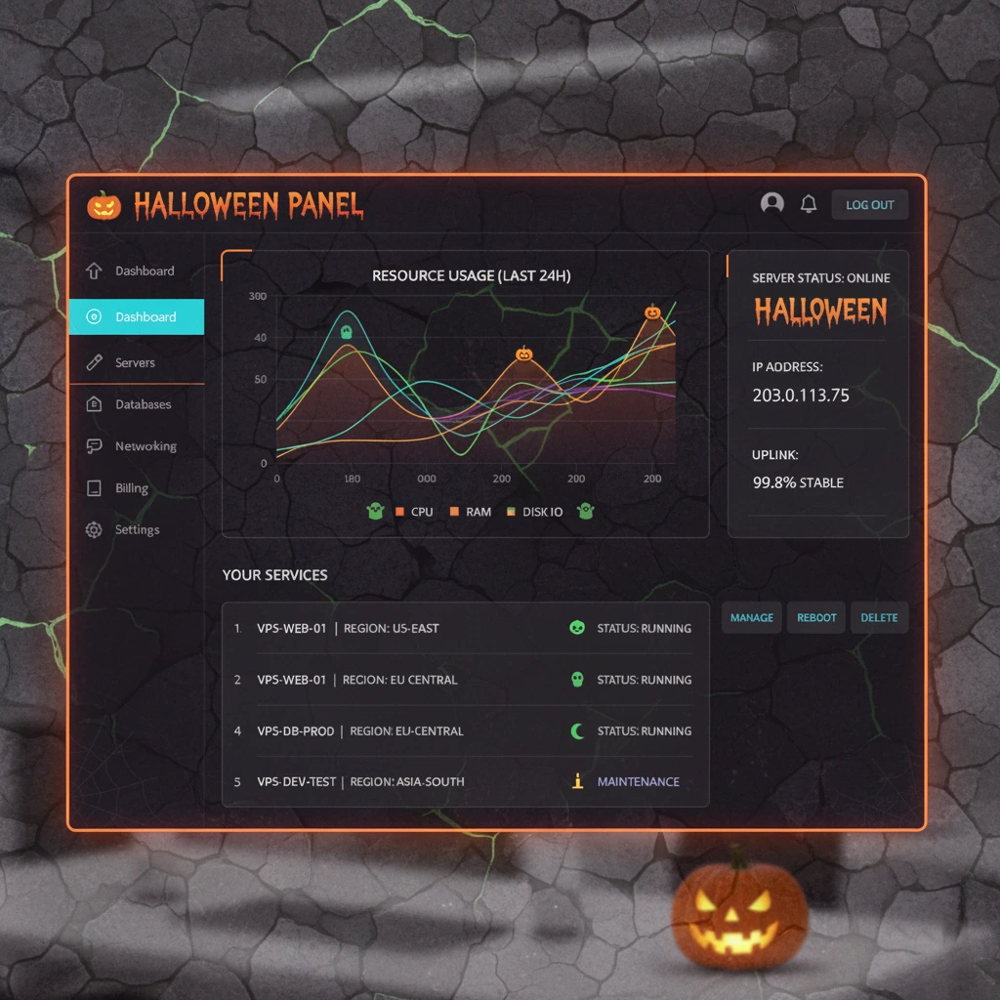

The Grimoire Control Panel
A control panel so powerful, it must be magic. We've brewed our custom panel to be intuitive, fast, and packed with all the spells you need to command your server.
Total Command Awaits
Forget clunky, outdated interfaces. The Grimoire gives you complete control in a clean, spooky interface.
- 1-Click Mod Installers: Summon complex modpacks with a single click.
- Real-time Console: Consult the oracle (your server console) directly in your browser.
- File Manager Familiar: Upload, download, and edit files without needing a clumsy FTP client.
- Scheduled Curses: Automate tasks like restarts, backups, and commands to run on a schedule.
- Sub-user Sorcerers: Grant trusted friends partial access to manage your server.

Mobile Magic
The Grimoire is fully responsive, allowing you to manage your server from your cauldron, crypt, or even on the go with your smartphone.
Live Crystal Ball
Monitor your server's live performance with real-time graphs for CPU, RAM, and player count. Know exactly what your server is doing at all times.
Ectoplasmic Backups
Create and restore backups of your world with ease. Never fear a creeper apocalypse again, as you can always revert to a saved spectral state.